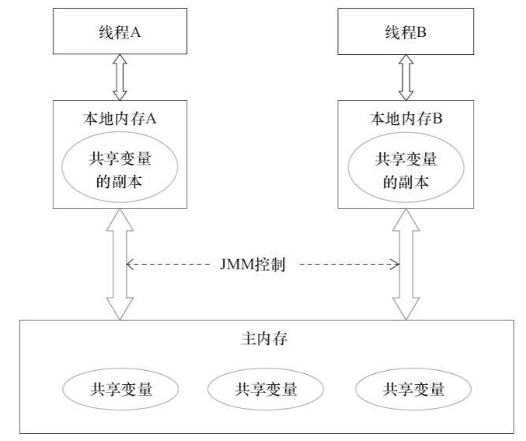
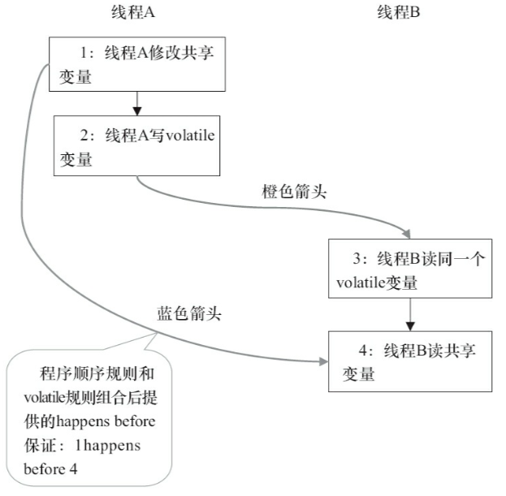
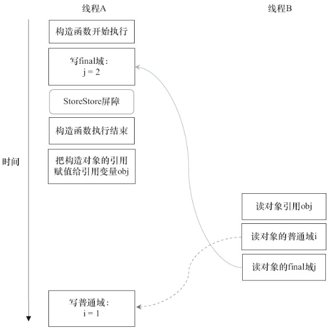
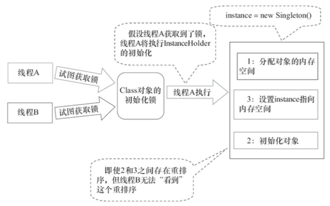

Java内存模型基础
在命令式编程中，线程之间的通信机制有两种：共享内存和消息传递。Java的并发采用的就是共享内存模型，线程之间共享程序的公共状态，通过写－读内存中的公共状态进行隐式通信。
Java线程之间的通信由Java内存模型(JMM)控制，JMM通过控制主内存与每个线程的本地内存之间的交互来决定了一个线程对共享变量的写入何时对另一个线程可见。
JMM定义了线程和主内存之间的抽象关系:线程之间的共享变量存储在主内存中,每个线程都有一个私有的本地内存,本地内存中存储了该线程以读/写共享变量的副本。本地内存是JMM的一个抽象概念,并不真实存在。它涵盖了缓存、写缓冲区、寄存器以及其他的硬件和编译器优化。但是这里需要说明的是，由于写缓存仅对自己的处理器可见，它会导致处理器执行内存操作的顺序与内存实际的操作顺序不一致，因为只有在JMM将缓存区数据刷新到内存中，才算完成了对内存的实际的操作。

指令重排序
重排序是指编译器和处理器为了优化程序性能而对指令序列进行重新排序的一种手段。从Java源代码到最终实际执行的指令序列，会分别经历3种重排序。
- 编译器优化的重排序：编译器在不改变单线程程序语义的前提下,可以重新安排语句的执行顺序。
- 指令级并行的重排序：如果不存在数据依赖性,处理器可以改变语句对应机器指令的执行顺序，将多条指令重叠执行。
- 内存系统的重排序：使用了读／写缓存区，导致加载和存储的顺序改变。
编译器和处理器在重排序的时候，会遵守数据依赖性(仅针对单个处理器和单个线程的操作指令)，也就是说不会改变存在数据依赖关系的两个操作的执行顺序。同样，为了提高并行度，编译器和处理器不管怎么重排序，单线程的执行结果不会改变，这就是内存模型中as-if-serial语义的内容。
但是在并发编程中，如果不理会这些重排序优化则很可能出现内存可见性问题。我们可以通过JMM来禁止特定类型的编译器重排序和处理器重排序(通过插入特定类型的内存屏障指令，实现对内存操作的顺序限制)，来保证多线程情况下的内存可见性。
这里我们补充说明一点，JMM不保证对64位的long型和double型变量的写操作具有原子性(分为2个32位的写总线事物)，但是在JDK5之后，保证其读操作是具有原子性的。
happens-before
happens-before：在JMM中，如果一个操作执行的结果需要对另一个操作操作可见，那么这两个操作之间必须要存在happens-before关系。
需要说明的是，上面提到的两个操作既可以是在一个线程之内，也可以是在不同线程之间的，而且并不意味着前一个操作必须要在后一个操作之前执行，仅仅要求前一个操作(执行结果)对后一个操作可见。
happens-before规则如下:
- 程序顺序规则：单个线程中的每个操作，happens-before于该线程中的任意后续操作
- 监视器锁规则：对一个锁的解锁，happens-before于随后对这个锁的加锁
- volatile变量规则：对一个volatile域的写，happens-before于任意后续对这个volatile域的读
- 传递性：如果A happens-before B ，且B happens-before C，那么A happens-before C
- join()规则：如果线程A执行操作ThreadB.join()并成功返回，那么线程B中的任意操作happens-before于线程A从ThreadB.join()操作成功返回
volatile的内存语义
volatile变量自身具有以下特性：
- 可见性：对一个volatile变量的读，总是能看到(任意线程)对这个volatile变量最后的写入
- 原子性：对任意单个volatile变量的读/写具有原子性，但类似于volatile++这种复合操作不具有原子性
从内存语义的角度来说，volatile的写-读与锁的释放-获取有相同的内存效果：
- volatile写：当写一个volatile变量时，JMM会把该线程对应的本地内存中的共享变量值刷新到主内存
- volatile读：当读一个volatile变量时，JMM会把该线程对应的本地内存置为无效，线程接下来将从主内存中读取共享变量
为了实现volatile的内存语义，编译器在生成字节码时，会在指令序列中插入内存屏障来禁止特定类型的处理器重排序。

在上图中，黑色箭头表示happens－before的程序顺序规则，橙色箭头表示volatile规则，蓝色箭头表示happens－before关系的传递性。
另外，Java的CAS操作同时具有volatile读和volatile写的内存语义，是整个concurrent包得以实现的基石。
锁的内存语义
锁是Java并发编程中最重要的同步机制，除了让临界区互斥执行外，还可以让释放锁的线程向获取同一个锁的线程发送消息。
从内存语义的角度来说：
- 释放锁：先线程释放锁时，JMM会把该线程对应的本地内存中的共享变量刷新到主内存中
- 获取锁：JMM会把该线程对应的本地内存置为无效，从而使得被监视器保护的临界区代码必须从主内存中读取共享变量
final域的内存语义
对于final域，编译器和处理器要遵守两个重排序规则：
- 在构造函数内对一个final域的写入，与随后把这个被构造对象的引用赋值给一个引用变量，这两个操作之间不能重排序
- 初次读一个包含final域的对象的引用，与随后初次读这个final域，这两个操作之间不能重排序，确保在读一个对象域之间，一定会先读包含这个final域的对象引用
从上面两个规则我们可以知道，写final域的重排序规则禁止把final域的写重排序到构造函数之外，编译器会在final域的写之后，构造函数return之前，插入一个StoreStore屏障。我们可以确保，在对象引用为任意线程可见之前，对象的final域已经被正确初始化过了，而普通域不具有这个保障。

同时我们需要保证在构造函数内部，不能让这个被构造对象的引用为其他线程所见，也就是对象引用不能在构造函数中“逸出”。
于是JMM提供了初始化安全保证：只要对象是正确构造的(被构造对象的引用在构造函数中没有“逸出”)，那么不需要使用同步，就可以保证任意线程都能看到这个final域在构造函数中被初始化之后的值。
双重检查锁定解决多线程中的单例
在Java多线程程序中，有时候需要使用单例模式，并采用延迟初始化来降低初始化类和创建对象的开销，人们首先提出了双重锁定检查来降低使用synchronized来锁定方法的同步开销，示例如下：
|
|
首先，上面的双重检查锁定代码示例是错误的，错误的地方在与第7行(instance = new Instance();)，这个语句可以分解为如下3行伪代码：
memory = allocate(); // 1:分配对象的内存空间
ctorInstance(memory); // 2:初始化对象
instance = memory; // 3:设置instance指向刚分配的内存地址
这里就有一个重排序的问题了，上面3行伪代码中的2和3之间,可能会被重排序，如果2,3被重排序了，在多线程环境中，就会有问题了。另外一个线程B在访问instance的时候，操作3已经执行了所有instance != null，但是操作2还未执行，这个时候线程B就去访问这个未被初始化的对象，于是出现了脏读的问题。
上述问题的解决方案也很简单，在JDK5增强了volatile的内存语义之后，我们只需一点小小的修改就行了，声明instance为volatile即可。
|
|
类初始化解决多线程中的单例
JVM在类初始化阶段(即在Class被加载后，且被线程使用之前)，会执行类的初始化。初始化一个类，包含执行这个类的静态初始化和初始化在这个类中声明的静态字段。JVM在执行类的初始化期间，会去获取一个锁，这个锁可以同步多个线程对同一个类的初始化。Java语言规范规定，对于每一个类或接口C，都有一个唯一的初始化锁LC与之对应。JVM在类初始化期间会获取这个初始化锁，确保每一个线程至少获取一次锁来确保这个类已经被初始化过了(获取Class对象锁之后，若类或者接口没有初始化则开始初始化，若已经被标记为初始化过了，则开始访问)。

基于这个特性，可以实现另一种线程安全的延迟初始化方案：
|
|